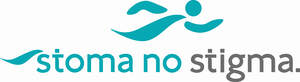

Trade Mark Journal No.2025/049 5 December 2025
UK00004267654 22 September 2025 (44)

- Class 44
- Providing medical information relating to medical products and prosthetic devices; Medical information services; Providing medical information in the medical products and prosthetic devices sector; Medical information services provided via the Internet; Providing medical information from a web site; Providing information about ostomy and urostomy closures for users well-being, peace of mind and comfort; Providing information about medical products and prosthetic devices for users well-being, peace of mind and comfort; Information, advice and consultancy services relating to ostomy and urostomy closures; Information, advice and consultancy services relating to medical products; Providing scientific information, advice and consultancy relating to medical products and prosthetic devices; Providing information, advice and consultancy services relating to ostomy and urostomy closures for users well-being, peace of mind and comfort; Providing information, advice and consultancy services relating to medical products and prosthetic devices for users well-being, peace of mind and comfort; Technical advice and consultancy services in the field of medical products and prosthetic devices; Providing information, advice and consultancy services in the field of medical products and prosthetic devices; Advisory and information services relating to medical products and prosthetic devices; Providing information relating to medical products and prosthetic devices; Commercial information and advice services for consumers in the field of medical products and prosthetic devices; Information, advice and consultancy services relating to medical products and prosthetic devices in respect of business continuity, logistics, efficiency, achievability, reliability, performance, aesthetic, commercial and environment factors in relation to product development and supply chains.
Suretech Adhesive Tapes Ltd
Representative: Shoosmiths LLP